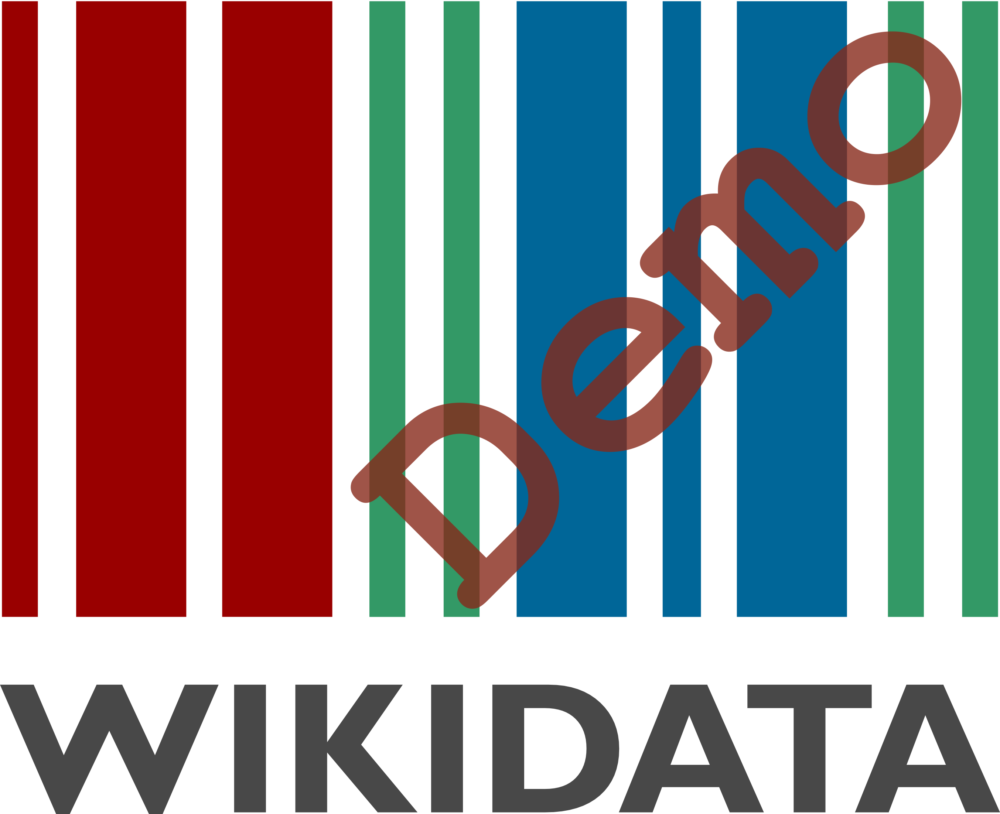

Welcome to the Wikidata demo and dev system!
Wikidata aims to create a free knowledge base about the world that can be read and edited by humans and machines alike. It will provide data in all the languages of the Wikimedia projects, and allow for the central access to data in a similar vein as Wikimedia Commons does for multimedia files. Wikidata is currently in development. You can see a demo of what we have been working on so far here.
What can I do here?
This is the demo of the current state of Wikidata development.
There are two parts of the demo:
- a repository - this is what holds the data
- a client - this is what consumes the data (Wikipedia for example in the future)
The repo contains the chemical elements as test items. Here is an example.
One simple workflow you can try out is to create a new entry in the repo-wiki and the create a matching article in the client-wiki. The client-wiki page will have all the language links on the left side you added on the repo-wiki.
Create a new entry here. The label you choose must be equal to the title of the page you will create in the client-wiki.
Add some language links in the repo-wiki to existing Wikipedias. Be sure to add language links to English (en) or the client-wiki won't try to find the interwiki links.
Create a new article with the label you used in the client-wiki.
Once you save the page you should see the language links you added to the repo-wiki on the left side.
There is more information and documentation coming up soon!
Where can I learn more about the project?
The project is open and you can find out more about the development on the Meta-Wiki.
Regards
the Wikidata team